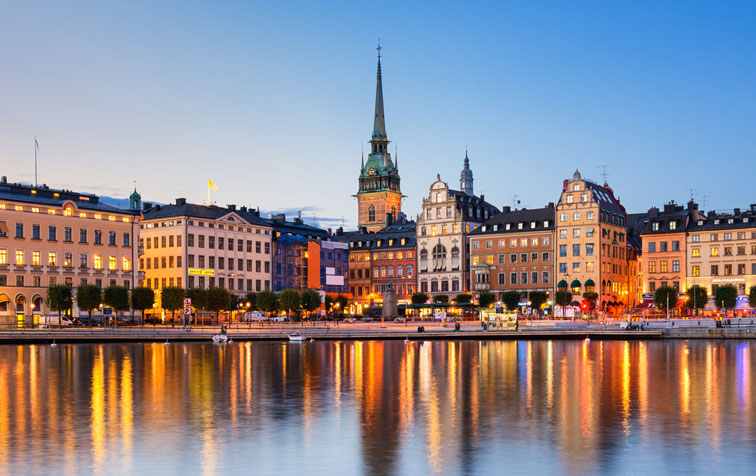
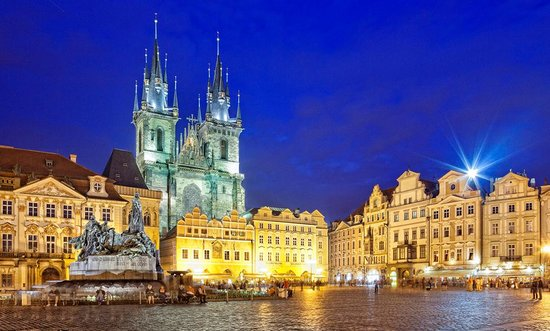

Bali (Balinese: Indonesian: Pulau Bali, Provinsi Bali) is an island and province of Indonesia. The province includes the island of Bali and a few smaller neighbouring islands, notably Nusa Penida, Nusa Lembongan and Nusa Ceningan.
Stockholm
Sweden

Stockholm is the capital of Sweden and the most populous city in the Nordic countries; 949,761 people live in the municipality, approximately 1.5 million in the urban area, and 2.3 million in the metropolitan area. The city stretches across fourteen islands where Lake Mälaren flows into the Baltic Sea. Just outside the city and along the coast is the island chain of the Stockholm archipelago. The area has been settled since the Stone Age, in the 6th millennium BC, and was founded as a city in 1252 by Swedish statesman Birger Jarl. It is also the capital of Stockholm County.
London
United Kingdom
London is the capital and most populous city of England and the United Kingdom. Standing on the River Thames in the south east of the island of Great Britain, London has been a major settlement for two millennia. It was founded by the Romans, who named it Londinium. London's ancient core, the City of London, largely retains its 1.12-square-mile (2.9 km2) medieval boundaries. Since at least the 19th century, "London" has also referred to the metropolis around this core, historically split between Middlesex, Essex, Surrey, Kent and Hertfordshire, which today largely makes up Greater London,a region go verned by the Mayor of London and the London Assembly.
Prague
Czech Republic

Prague is the capital and largest city in the Czech Republic, the 14th largest city in the European Union and also the historical capital of Bohemia. Situated in the north-west of the country on the Vltava river, the city is home to about 1.3 million people, while its larger urban zone is estimated to have a population of 2.2 million. The city has a temperate climate, with warm summers and chilly winters